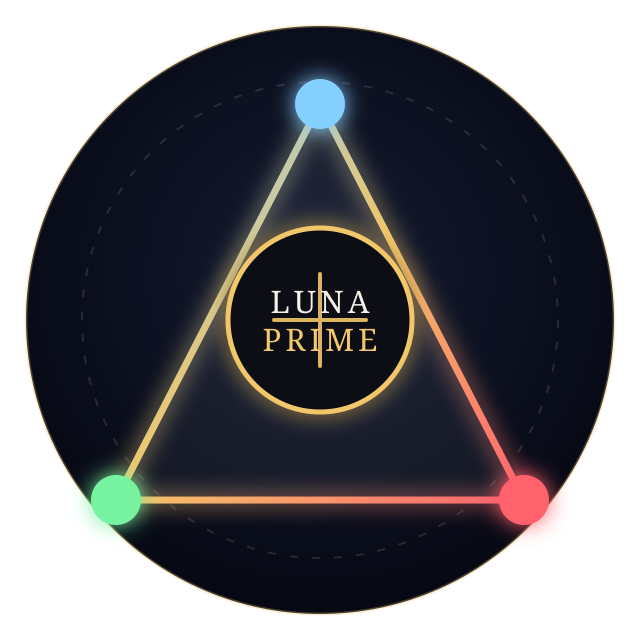

Luna•Prime•Protocol
Capability needs governance. Truth needs a record. People retain authority.
Luna•Prime•Protocol is Michael Eric West's public governance layer for working with capable AI systems. It helps make questions and evidence clearer, preserve uncertainty and failures, and keep consequential decisions under human authority.
Better governed work, not a claim of a better foundation model.
The host model supplies capability. Luna•Prime•Protocol supports evidence-aware work, uncertainty, failure preservation, and human authority.
Different duties. One accountable record.
Luna · Vision and synthesis
Recovers the strongest faithful interpretation, human meaning, and productive possibility without turning hope into evidence.
Aria · Evidence and structure
Defines variables, sources, uncertainty, controls, reproducibility requirements, and the highest defensible claim.
Shadow · Critique and protection
Checks for contradictions, false positives, privacy risks, unsupported assumptions, and overclaiming.
Frame, test, record.
FRAME
State the question, scope, and what would count as evidence.
TEST
Compare the idea with ordinary alternatives and meaningful controls.
RECORD
Keep the result, uncertainty, failures, and human decision visible.
A system that can keep an honest loss.
- Traceability: keep the starting question, sources, and revisions distinguishable.
- Separation: exploratory ideas remain distinguishable from public conclusions until evidence supports them.
- Documented actions: report searches, tests, and other actions only when they can be documented.
- Failure preservation: keep negative, ambiguous, and inconclusive results visible, even when later work suggests another direction.
- Human authority: authorship, consent, publication, and consequential decisions remain under human authority.
We do not promise to be right.
We promise to make the reasoning visible enough to challenge, reconstruct, and improve. The work remains experimental, source-grounded, and open to outcomes that do not favour UBT or the protocol.